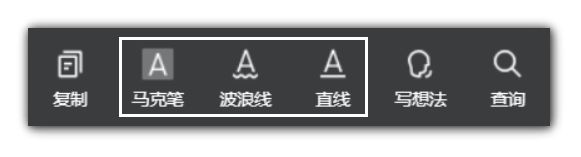

在设置页，你可以设置文本导出效果。
什么是一级标注、二级标注、三级标注？
在微信读书中，标注分三类，分别是波浪线、马克笔和直线（如下图）：
被直线标注的文本就是设置页面中所谓一级标注，被马克笔标注的文本是二级标注，被波浪线标注的是三级标注。
什么是前缀、后缀？
插件可为你的不同级别的微信读书标注补充文本，补充在标注前面的部分为前缀，补充在后面的部分为后缀。
你可以在输入框中设置标注前后缀。设置为前缀的内容将会在导出文本的时候添加到标注开头，设置为后缀的内容则将会在导出文本的时候添加到标注之后。
比如，如果你希望书本中二级标注（用马克笔标注的文字）导出来后在Markdown中加粗，你只需要将二级标注前后缀设置为两个星号：**。
又比如，如果你希望书本中用直线标注的文字（一级标注）导出来后加下划线，你只需要将一级标注前后缀分别设置为<u>和<u>。
再比如，当希望被二级标注（马克笔）标注的文字导出来之后在最前面包含一个"●"。你只需要将二级标注后缀则设置为空（也就是不设置任何内容），二级标注的前缀设置为
●
最下面的五个有关正则表达式的部分是干嘛的？
当微信读书中的三种标注不能满足你添加前后缀的需求时，你可以借助正则表达式匹配标注，被匹配的标注将会被添加前后缀。如当你要匹配一个开头为"提示"二字的标注时，可输入正则表达式：
^提示
插件中正则匹配的实现方式是借助输入的正则表达式创建RegExp对象来匹配内容，所以需要注意常见特殊字符的转义。
注意：选中正则表达式右下方的选中框该正则表达式才会生效。
什么是一级标题前缀、二级标题前缀、三级标题前缀？
你平时在读书页看见的目录对应不同级别的标题。
你可以在设置页中设置标题导出级别。
默认级别分别是二级：## 、三级：### 和四级：#### 你可以通过自己改变井号数量来改变标题级别，从而得到不同的标题导出效果。
注意：你需要在最后一个井号之后加一个空格标题才会正常显示。
事实上，修改标题级别本质上是在修改标题的前缀。
什么是想法前后缀？
想法也就是你平时读书的时候在书中发表的想法。前后缀与前面提到概念的一样。当你将前后缀设置为两个星号（**）时，导出的想法将会被加粗。
是否显示热门标注标注人数有什么用？
由选项是否显示热门标注标注人数，你可以设置导出的热门标注中是否带标注人数。当你选择是的时候，导出的内容中将会包含每条热门标注被标记的人数，选择否则不会。